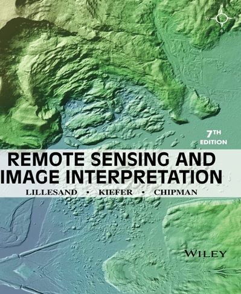

STEM Education
The education component emphasizes practical learning through image acquisition, remote-sensing, data analysis, and image interpretation.
Student Activities
- Satellite-data sourcing, NDVI index calculation and spatial vegetaion mapping (at regional level)
- UAV image collection, image processing, ExG index calculation (at local level)
- Hyperspectral acquisition, image calibration, NDVI calculation and image analysis (at micro level)
- Python (Google Colab), ENVI, and MATLAB image processing tools
Suggested Textbook
The experiments and educational activities presented on this website can be used together with selected readings from the following textbook.

Figure 1. Remote Sensing and Image Interpretation, Seventh Edition.
Authors: Thomas Lillesand, Ralsph W. Kiefer, Jonathan Chipman
Edition: Seventh Edition
Publisher: Wiley
Suggested Reading by Topic
The following chapters from Remote Sensing and Image Interpretation, Seventh Edition, by Lillesand, Kiefer, and Chipman provide background information for the educational activities presented on this website.
| Website Topic | Suggested Reading |
|---|---|
| Introduction to Remote Sensing | Chapter 1 – Concepts and Foundations of Remote Sensing |
| Remote Sensing Instruments and Platforms | Chapters 1 and 4 |
| Sentinel-2 Imagery | Chapters 4 and 5 |
| NAIP Aerial Imagery | Chapters 2 and 4 |
| UAV RGB Imagery | Chapters 2 and 4 |
| Hyperspectral Sensing | Chapter 4 |
| NDVI and Vegetation Analysis | Chapters 4, 7, and 8 |
| Excess Green (ExG) and Digital Image Processing | Chapter 7 |
| Image Enhancement and Interpretation | Chapter 7 |
| Agricultural Applications | Chapter 8 |